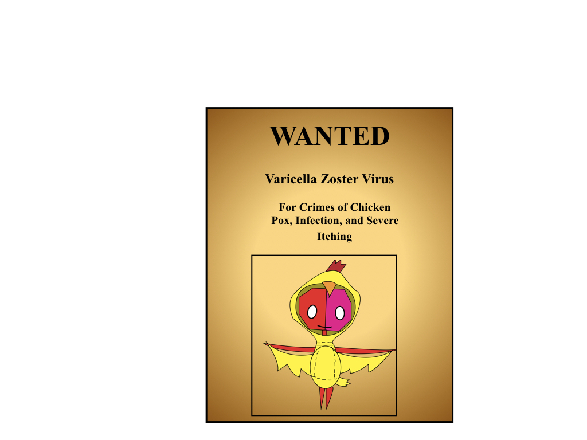
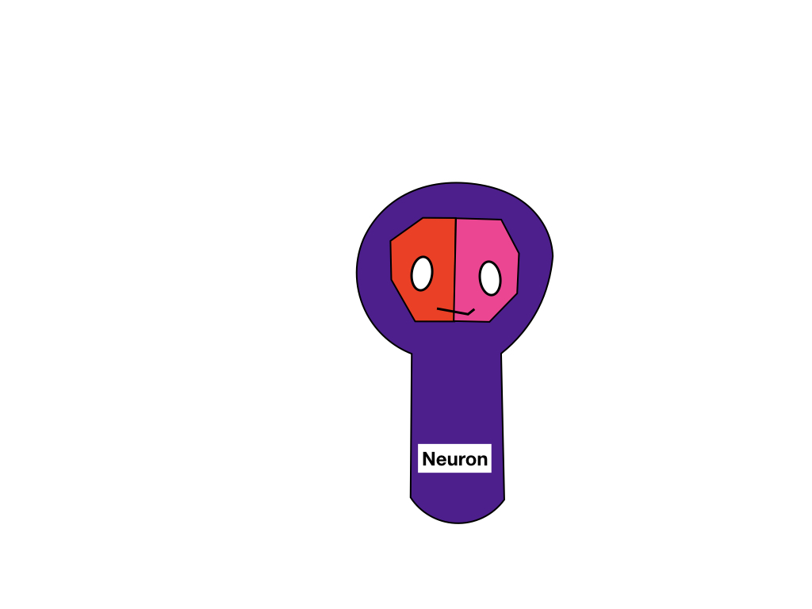
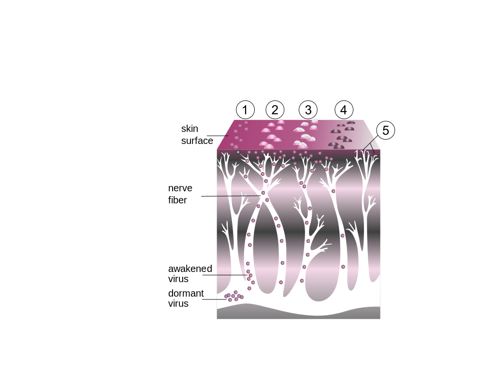

Varicella-zoster virus can be spread through the air making it extremely infectious3. A person becomes infected with VZV by breathing it in1.. It’s not until 10 to 21 days after the initial VZV infection that the hallmark red dotted skin rash appears1. The rash contains the highest concentrations of VZV, which is why you’re only infectious when the rash appears, and not beforehand2. It becomes airborne when someone sheds infected skin cells, typically due to scratching (so put on those oven mitts!). The symptoms of chickenpox include fever, tiredness and the blister-like rash which can form between 250 and 500 blisters, all of which itch!!4The active infection lasts about 5 to 7 days (though it certainly feels a lot longer)4.
How does your immune system stop chickenpox? When the VZV reaches the skin, alarm signals are sent to the immune system by molecules called cytokines 1. These cytokines are like someone pulling a fire alarm. They call immune cells to the site of infection to start fighting the virus. One cell type they call are to the fight are T cells. T cells are a type of immune cell that have specificity and memory. Your immune system needs to develop T cells specifically trained to recognize and kill the VZV; fighting the infection and preventing VZV reactivation1. Think of it like a police force that has the Wanted Ad for the criminal and are waiting for a sighting to take action.

Once your body finds a T cell that is good at fighting VZV, it forms that cell into what we call a memory T-cell. The memory T cell sticks around after the infection to ensure that your body will be able to fight off chickenpox better and faster the next time it tries to attack. T cells fight off VZV by killing the infected cells directly and by recruiting another kind of immune cell, B cells3. These B cells also have specificity and memory. B cells produce antibodies, a special type of protein that binds to VZV specifically3. Antibodies can activate the killing of infected cells by binding to the infected cell surface and serving as the Wanted Ads for virus5. B cell antibodies help T cells to kill the virus5. The chickenpox infection in children is normally self-limiting meaning that it’s resolved by your immune system’s actions without requiring additional medical treatment3.
If you’ve had chicken pox once, you have long lasting immunity against chickenpox, meaning you won’t fall sick with chickenpox again3. The VZV still remains in your body, but no longer actively causes infection, so it's a latent or inactive virus6. Your immune system, mainly through your memory T cells, holds the VZV in check, keeping it in its latent state6. The long lasting protection and self limiting nature of chickenpox is partly why some parents would have chickenpox parties, where all the neighborhood children could get chickenpox at the same time and be protected for the rest of their lives afterwards. Before the push of chickenpox vaccination, most children under the age of ten would get chickenpox3. It was thought to be a normal part of life as a young child.
Even though chickenpox is self-limiting, it can have very dangerous complications for a few people3. These complications include dehydration, bacterial sepsis, pneumonia, inflammation of the brain (encephalitis) and bleeding (hemorrhage)3. If these complications occur in infants, adults, and people with weakened immune systems (from drug treatments or medical conditions), they can cause death in severe cases3. Also, if a pregnant woman gets infected with chickenpox, it can result in developmental problems for the baby3. Chickenpox is much more dangerous in anyone over the age of twelve, teens and adults, because they are much more likely to suffer from complications than children, although it’s unclear why this happens3. It may have something to do with the ways that the immune system changes how it battles infections as you age, but further research is needed to get answers. Overall, to mitigate complications anti-viral drugs can be used in risker cases, like when adults get chickenpox.
The United States successfully implemented a vaccine program against chickenpox in 19957. The chickenpox vaccine is a live attenuated vaccine, meaning that a weakened form of VZV (unable to cause infection in healthy people) is used to get your immune system prepared to fight actual, strong VZV by giving the Wanted Ads to the police force (T cells and B cells) ahead of time6. The frequency of chickenpox infections decreased 90% in the first ten years of the vaccination program7. The decrease in deaths of younger children one to four years old was drastically reduced by 92%7. The current vaccine program recommended by the Center for Disease Control (CDC) is a 2 dose program, one administered at 12 to 15 months of age and the second dose at 4 to 6 years of age4. This two dose program is 98% effective at preventing chickenpox6.
Even though the chickenpox vaccine successfully prevents you from getting sick with chickenpox, you still may get infected with VZV6. This doesn’t mean that the vaccine failed. The important difference when you get vaccinated is that instead of falling ill and being horribly itchy for days, your immune system stops the active infection and keeps the virus in its latent state6. So, the risks, complications and itchiness are avoided, but the VZV still finds its way into your body, just as it would if you experienced chickenpox with the rash and all its unpleasantness3.
VZV hides in neurons from the immune system throughout life3.

How and why VZV reactivates is still unknown and remains an active area of medical research3. The secondary infection with VZV is called herpes zoster or shingles3. The risk of shingles increases with age or with immunocompromisation (i.e. cancer, organ transplant, HIV, drugs)3. Researchers believe that the increased risk correlates with the how your your immune system weakens with age, especially your police force, T cells1. About one in three adults both worldwide will suffer from a shingles infection8.
A shingles infection may involve a rash3. Since the VZV hides out in neurons, the rash can appear anywhere on the body, but it’s usually limited to one side or the face. This is unlike chickenpox which can cover the whole body9.

|:--:|
| The progression of shingles |
(1) A cluster of small bumps turns into
itchy blisters
(2) that are similar to chickenpox lesions.
(3) The blisters fill with pus, break open, and crust over and
(4) finally disappear.
(5) A painful condition called post-herpeticneuralgia can sometimes occur.
The rash is preceded by pain, itching and/or tingling anywhere from one to five days before the rash appears9. While the chickenpox rash only lasts about a week, the shingles rash will take about 2 to 4 weeks to clear up9. Fever, headache and chills are other symptoms of shingles9. Paralysis of facial muscles or weakness in the arm or diaphragm can also occur10. Unlike chickenpox, shingles cannot spread from person to person9. However, the VZV that caused the shingles can spread and cause chickenpox in someone who has never had chickenpox (or been vaccinated against it)9. Both chickenpox and shingles spread the VZV by scratching or touching the rash so until the rash scabs over, you’re infectious9. Shingles can also increase the risk of a stroke by 30% in the first year3. In some cases, shingles can result in loss of vision and eye pain3. The rash doesn’t always appear for shingles either, which can make it hard to recognize and diagnose3. The biggest complication associated with shingles is postherpetic neuralgia (PHN)3. 15% of people who get shingles will also suffer from PHN3. PHN is a chronic pain that can last three months or more past infection3. Shingles can be treated with anti-viral drugs but these treatments don’t always resolve the other complications3.
Your body’s T cells are thought to be the crucial part of the immune system that both helps you recover from chickenpox and prevents VZV reactivation7. As you age, your immune system weakens which may be the reason for the reactivation of the VZV and shingles infections in 30% of the population
VZV only infects humans2. This exclusivity is important because the only disease we’ve managed to successful eradicate in humans is smallpox, which also only infected humans. This feat was accomplished with several decades of vaccination till there were no infection cases or human hosts to pass on the pox. Perhaps one day chickenpox and shingles could be eradicated. To put “A pox on (chicken)pox”, we need to improve our understanding of VZV, chickenpox and shingles; determine how VZV enters its latent state after chickenpox and prevent it; learn how VZV reactivates so we can prevent shingles more successfully. We can then apply this knowledge to develop better vaccines for chickenpox and shingles so that one day chickenpox and shingles are eradicated, never again infecting humans.
Zerboni, L., Sen, N., Oliver, S. L. & Arvin, A. M. Molecular mechanisms of varicella zoster virus pathogenesis. Nat. Rev. Microbiol. 12, 197–210 (2014).
Yawn, B. P. & Gilden, D. The global epidemiology of herpes zoster. Neurology 81, 928–30 (2013).
Gershon, A. A. et al. Varicella zoster virus infection. Nat. Rev. Dis. Prim. 1, 15016 (2015).
Chickenpox | About | Varicella | CDC. CDC (2016). at https://www.cdc.gov/chickenpox/about/index.html
Murphy, Kenneth, Janeway, Charles A. Jr., Travers, Paul, and Walport, M. Janeway’s Immunobiology, 8th Edition. (Garland Science, 2012).
Gershon, A. A. Is chickenpox so bad, what do we know about immunity to varicella zoster virus, and what does it tell us about the future? J. Infect. 74 Suppl 1, S27–S33 (2017).
Marin, M., Zhang, J. X. & Seward, J. F. Near Elimination of Varicella Deaths in the US After Implementation of the Vaccination Program. Pediatrics 128, 214–220 (2011).
Bender, E. Why a New Vaccine for Preventing Shingles Received FDA Approval and a CDC Recommendation. Neurol. Today 18, 1 (2018).
Shingles | Home | Herpes Zoster | CDC. CDC (2017). at https://www.cdc.gov/shingles/
Gilden, D., Nagel, M., Cohrs, R., Mahalingam, R. & Baird, N. Varicella Zoster Virus in the Nervous System. F1000Research 4, (2015).